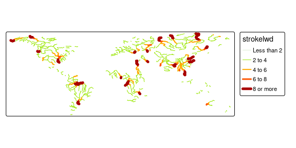

Default:
tm_shape(World) +
tm_polygons(fill = "HPI")
Landscape legend:
tm_shape(World) +
tm_polygons(fill = "HPI",
fill.legend = tm_legend("Happy Planex Index",
orientation = "landscape",
position = tm_pos_out("center", "bottom")))
#> [plot mode] fit legend/component: Some legend items or map compoments do not
#> fit well, and are therefore rescaled.
#> ℹ Set the tmap option `component.autoscale = FALSE` to disable rescaling.
Hide legend:
tm_shape(World) +
tm_polygons(fill = "HPI",
fill.legend = tm_legend_hide())
Combine legends of two visual variables:
break_values <- c(-Inf, 2, 4, 6, 8, Inf)
color_values <- c("#B4D79E", "#98E600", "#FFAA00", "#FF5500", "#A80000")
size_values <- c(0.5, 1, 2, 3, 5)
tm_shape(rivers) +
tm_lines(
col = "strokelwd",
col.scale = tm_scale_intervals(values = color_values, breaks = break_values),
lwd = "strokelwd",
lwd.scale = tm_scale_intervals(values = size_values, breaks = break_values),
lwd.legend = tm_legend_combine("col"),
plot.order = tm_plot_order("lwd", reverse = FALSE, na.order = "bottom")
) +
tm_layout(legend.show = TRUE)